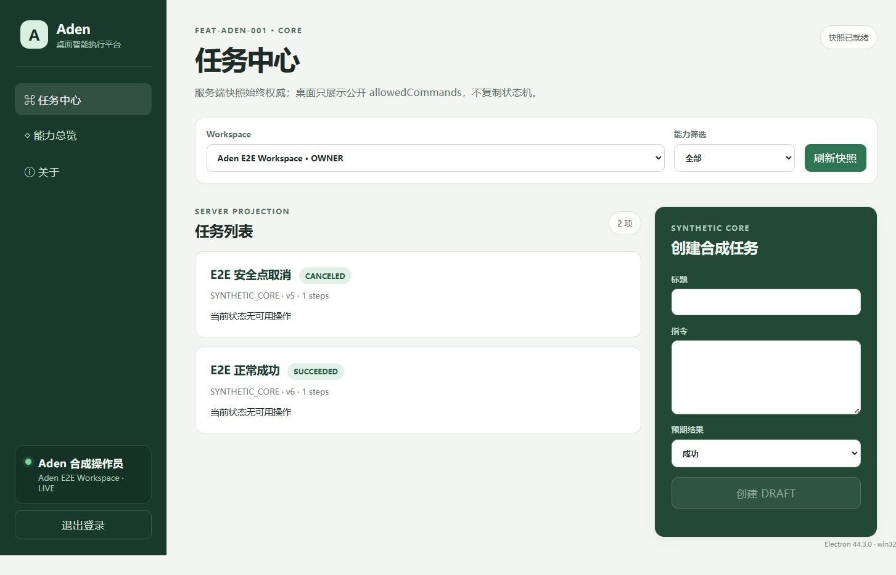

Aden 桌面执行底座 · 合成验收报告
FEAT-ADEN-001 · 2026-09-25（Asia/Shanghai）· 隔离本机环境 · 用户接受决定待确认
4 / 4已执行合成场景通过
55桌面端测试通过
待确认用户接受决定
对象与环境
Electron 桌面端 0.2.0；隔离 MySQL、Redis、RuoYi 与 Runner simulator 均位于随机 loopback 端口。合成操作员进入唯一的 Aden E2E Workspace。本轮临时 API 为 http://127.0.0.1:3152，关闭验收窗口后自动清理。没有使用真实账号、业务数据、模型或外部连接器。
构建限制：干净后端聚合构建在 ruoyi-admin 阶段失败；同时查到原有 8081 进程占用目标 JAR。未保留完整 Maven 错误文本，不能确认唯一根因。本轮运行复用了 2026-09-13 的后端 JAR；桌面 bundle 本轮重新生成。该失败保留为 Fail，不计入通过项。
场景结果
| 场景 | 预期与实际 | 结果 | 证据边界 |
|---|---|---|---|
| 隔离环境与验证码 | Aden 迁移到 V4 并校验；/captchaImage 返回开启状态和 JPEG。 | Pass | 只证明本轮合成环境。 |
| 任务成功与安全取消 | 真实跨进程 E2E 输出 ADEN_SYNTHETIC_E2E_OK；页面出现 SUCCEEDED 与 CANCELED。 | Pass | 此自动场景使用验证码关闭的 test profile。 |
| 图片验证码登录 | 独立 Electron 会话人工读取并输入图片验证码；进入授权 Workspace 的任务中心，无 renderer pageerror。 | Pass | 首次输入后未进入任务中心且未捕获错误文本；重新获取新验证码后通过。 |
| 退出登录 | 点击退出后回到“登录 Aden”页面。 | Pass | 同一验证码开启的桌面会话。 |
| 用户可用性与接受决定 | 由用户查看保留窗口并决定是否接受界面与限制。 | NotRun / 待确认 | Agent 的技术执行不代替用户签收。 |
验证码登录后的任务中心

截图采自实际验证码开启的 Electron 会话。成功与取消任务由同一隔离环境的自动 E2E 创建；截图不含口令、Token 或验证码答案。
结论与来源
本轮合成 CORE 场景执行通过；用户接受决定仍待确认。真实微信、电商、ERP、Provider、安装包、生产部署和发布均未验收。
本报告按相邻 验收记录.md 与 验证记录.md 的 2026-09-25 实际步骤整理，是展示件；场景状态以验收记录为准。执行方式：npm test；run-synthetic-e2e.ps1 -SkipBuild -InteractiveUat；独立 Electron profile 中进行图片验证码登录和退出。